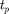

calculate_fnfp
One possibility to asses sensor fault detectors is to determine the false-negatives-rate and false-positives-rates. The lower this values, the better is the detector. This function determines this rates by comparing the output ('detection') made by the detector with the correct values ('trigger') which where saved from the faultinjection-framework. Both rates are calculated by using the following equations:  $
$
- : number of false-negatives detections
- : number of false-positives detections
- : number of right-negatives detections
- : number of right-positives detections
function [fn, fp] = calculate_fnfp(trigger, detection)
By substraction the detection output from the trigger values. Now we have the following machtes:
- r(i) = -1 -->
- r(i) = 1 -->
- r(i) = 0 and detection(i) = 0 -->
- r(i) = 0 and detection(i) = 1 -->
r = trigger - detection;
Determining the values
% Count true-negatives a = r(r==0 & detection == 0); sa = size(a); tn = sa(1,2); % Count true-positives a = r(r==0 & trigger == 1); sa = size(a); tp = sa(1,2); % Count false-positives a = r(r==-1 & detection == 1); fp = -1 * sum(a); % Count false-negatives a = r(r==1 & detection == 0); fn = sum(a);
convert fn/fp to rates
fn = fn/(tp+fn); fp = fp/(tn+fp);
end